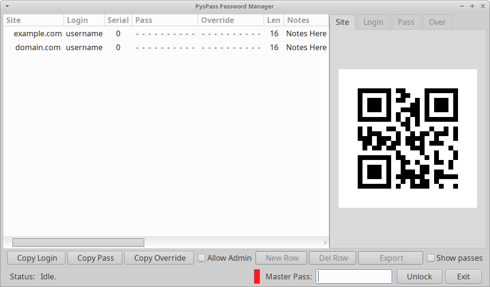
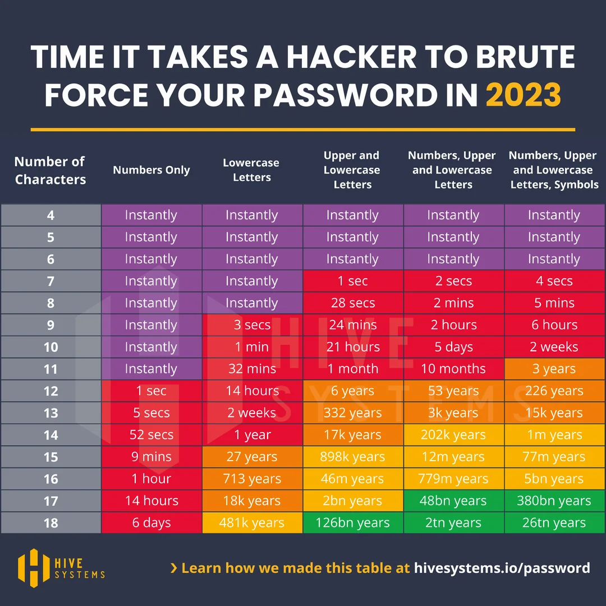

Under construction. DO NOT USE.
A python / PyGObject version of the popular password manager concept.
Generates passes from Site / Login / Serial / Master Pass
SHA256 strong. No passes are saved, only site, site login name and serial number is saved.
The hashes are calculated at the time of master pass entry, and compared to the checksum field. This assures that there are no sensitive items stored.
The only item that cannot be calculated is the pass override. (custom pass) that is stored with AES encryption.
Pass is displayed as a QR code. (For your eyes only) The default tab is for the site, the pass QR is not shown unless 'Auth' is selected, and the master pass is successfully entered.

We selected 16 letter long pass as default. Below a table of difficulty for breaking

// EOF